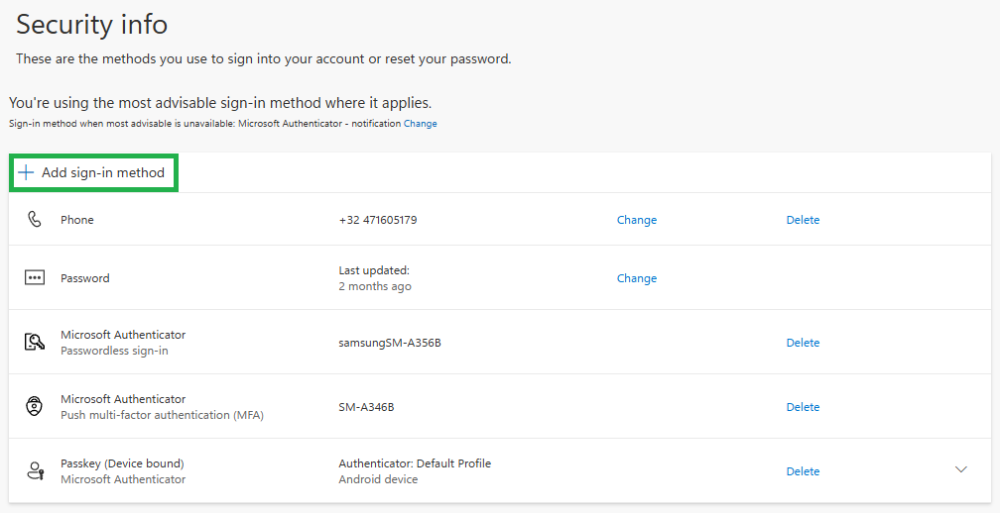
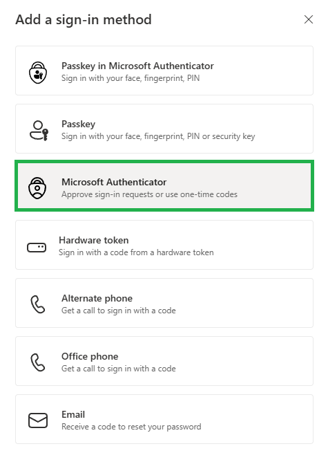
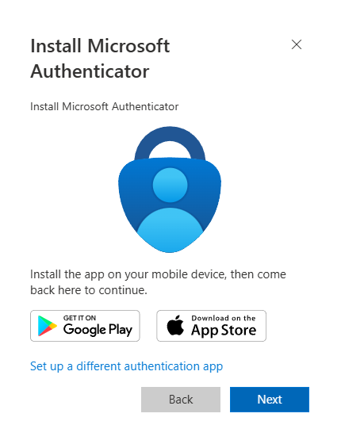
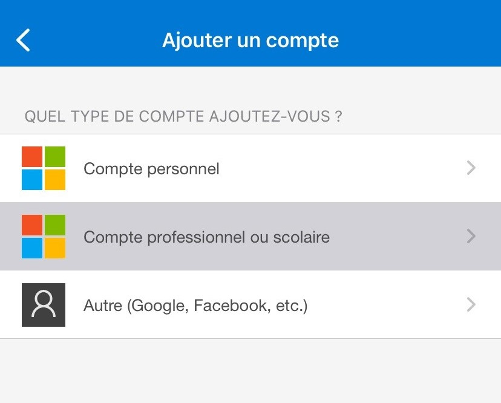
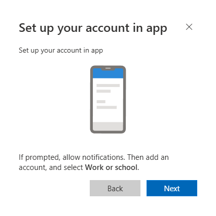
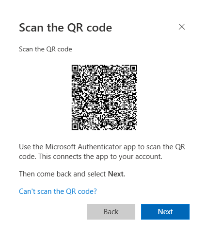

Ce guide vous explique étape par étape comment configurer Microsoft Authenticator pour votre compte professionnel.
Depuis votre ordinateur, ouvrez la page Microsoft suivante :
Connectez-vous avec votre adresse e-mail professionnelle et votre mot de passe si Microsoft vous le demande.
Vous arrivez sur la page des informations de sécurité.
Cliquez sur : + Ajouter une méthode de connexion

Une liste des méthodes de connexion disponibles apparaît.
Sélectionnez : Microsoft Authenticator

Microsoft vous demande maintenant d'installer l'application Microsoft Authenticator sur votre smartphone.

Cliquez sur Next.

Cliquez sur Next.

Microsoft affiche alors le QR code que vous devrez scanner avec votre smartphone.
Votre smartphone est maintenant prêt à scanner le QR code affiché sur votre ordinateur.

Le QR code est personnel. Ne le partagez avec personne.
Une fois le QR code scanné, revenez sur votre ordinateur et cliquez sur Next.
Microsoft envoie maintenant une notification dans Microsoft Authenticator.
Un code à 2 chiffres apparaît sur votre ordinateur.
Ouvrez la notification sur votre smartphone et saisissez le code affiché.
La configuration n'est pas terminée tant que vous n'avez pas validé la notification sur votre smartphone.
Une fois le code validé, Microsoft Authenticator est correctement configuré pour votre compte professionnel.
Si une notification Microsoft Authenticator apparaît alors que vous n'essayez pas de vous connecter, refusez la demande et contactez le support informatique.
Si vous êtes bloqué pendant la procédure, contactez le support informatique.
Ne supprimez pas votre compte dans Microsoft Authenticator et ne recommencez pas la procédure plusieurs fois sans assistance.